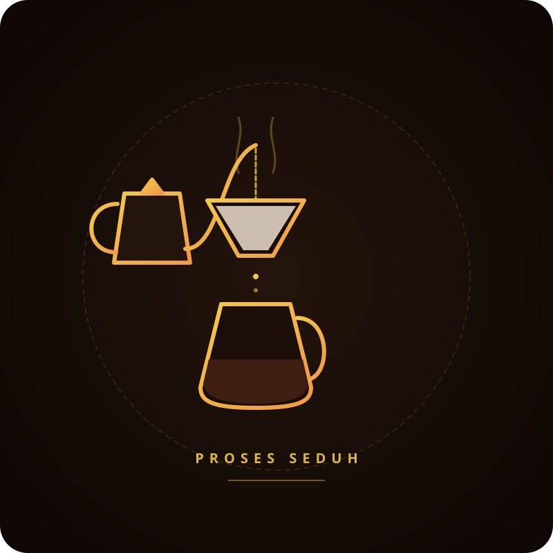

Lompati ke konten utama
Beranda
Tentang Kami
Produk
Galeri
Kontak
Galeri Kopi Nusa
Media Usaha
Etalase produk membantu pelanggan mengenali pilihan kopi.

Proses seduh manual menjadi bagian dari cerita produk.
Nada Penanda Kedai
Menikmati lagu sambil santai menikmati enaknya kopi.
Browser Anda tidak mendukung pemutar audio.